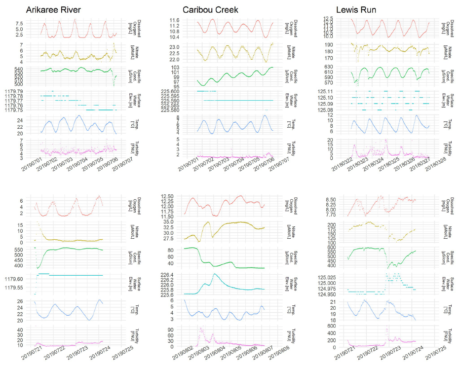
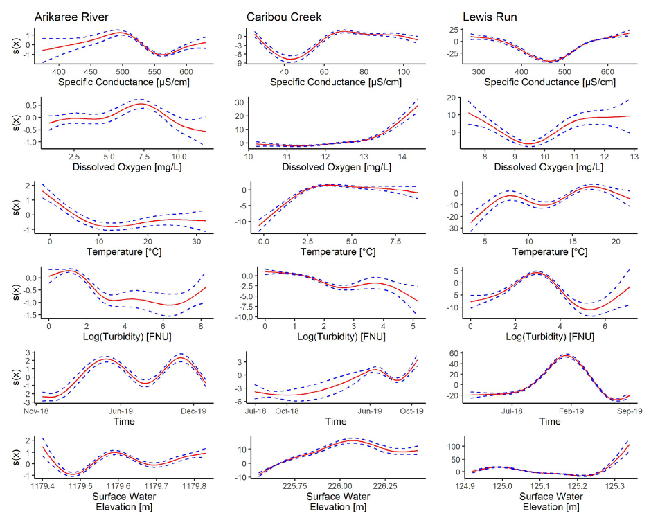
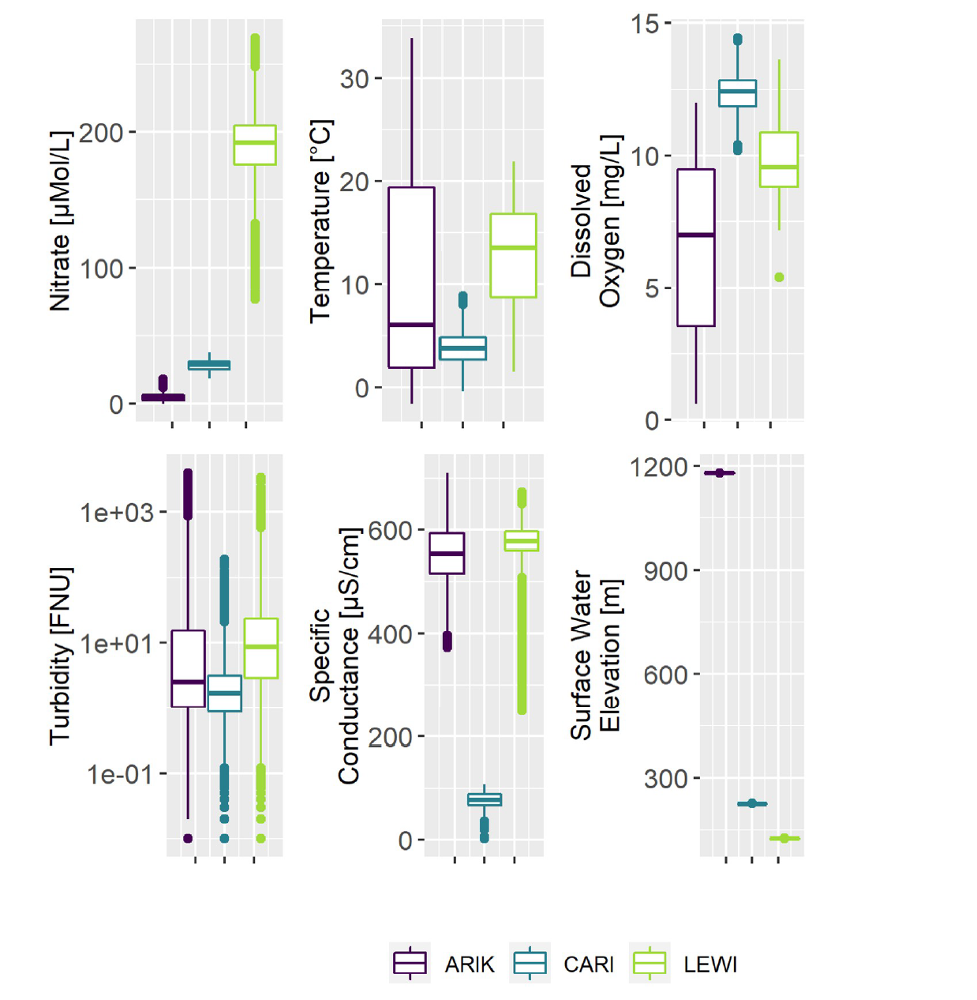
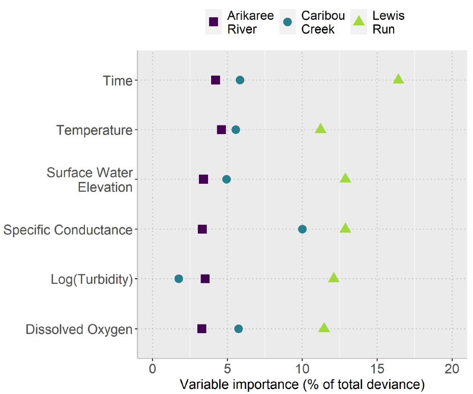

Understanding Nitrate Through Smart Data
Uncovering Nitrate Patterns from High-Frequency Data
Building on that question, the study by Kermorvant et al. (2023) provides a powerful real-world test of whether cheaper sensor data can indeed reveal how nitrate behaves in rivers.
To investigate this, the researchers analysed high-frequency water-quality records from the National Ecological Observatory Network (NEON), a U.S. program that publishes open, standardised environmental data.
NEON’s in-situ sensors collect readings every 15 minutes, creating detailed time-series data that capture how rivers change through seasons, storm events, and daily cycles.
For this analysis, the researchers focused on three ecologically distinct watersheds: the Arikaree River in semi-arid Colorado, Caribou Creek in subarctic Alaska, and Lewis Run in temperate Virginia (Figure 1). Together, these sites offered over 70,000 time-stamped measurements collected between 2018 and 2019, spanning wide environmental gradients from frozen tundra to warm agricultural plains.
Each site continuously measured water temperature, dissolved oxygen, turbidity, specific conductance, and surface-water elevation, while nitrate levels were monitored using a smaller number of costly, specialised sensors.
These rich, real-time datasets provided the foundation to test whether advanced modelling could capture nitrate dynamics without relying solely on expensive nitrate instrumentation.
Capturing Rapid Change in Rivers
High-frequency data reveal short-term river fluctuations that traditional grab-sampling often misses.
As shown in Figure 2, the upper panels display daily cycles in temperature, oxygen, and other variables, showing rivers “breathe” through natural light and photosynthesis patterns. The lower panels show storm or flow events, with sharp spikes in turbidity or water level as runoff enters the system.
Such fine-grained temporal resolution demonstrates why continuous monitoring with cheaper sensors is so powerful — it captures the fast processes that shape nitrate concentration but are invisible in sparse, manual sampling. However, to interpret these complex, non-linear dynamics, a flexible modelling approach is essential.

These examples set the stage for the modelling work that follows, showing how dynamic river systems require equally flexible analytical tools.
Modelling Relationships Beyond Straight Lines
To make sense of these dynamic signals, the researchers used Generalised Additive Mixed Models (GAMMs), a flexible statistical method capable of describing non-linear patterns and time dependence in water-quality data.
Each model used six predictor variables from low-cost sensors:
- specific conductance
- dissolved oxygen
- temperature
- turbidity (log-transformed)
- surface-water elevation
- time (to capture seasonal cycles).
GAMMs fit smooth curves instead of straight lines, allowing the model to learn relationships that shift under different conditions.
For example, nitrate may rise with temperature up to a threshold, then fall as biological uptake increases which are patterns that linear models would miss.
As illustrated in Figure 3, these smooth relationships differ between sites: nitrate rose with conductivity at Lewis Run, indicating nutrient-rich runoff, while at Caribou Creek, temperature showed a thaw-related seasonal pulse.
This diversity confirms that real rivers don’t behave linearly, reinforcing the need for flexible models like GAMMs to uncover how cheap sensor data relate to nitrate.

Once these models were fitted, the results revealed just how powerful this approach could be.
What the Models Revealed
Across all sites, the GAMM explained around 99% of nitrate variation, far exceeding the 75–85% captured by simpler Generalised Additive Models (GAMs) that lacked the mixed-model time component (Kermorvant et al., 2023).
This shows that even with only inexpensive sensor data, advanced models can reconstruct nearly all the behavior of nitrate observed by costly instruments (Table 1).
| Site | Location | GAM Performance | GAMM Performance | Improvement |
|---|---|---|---|---|
| Arikaree | Colorado (Semi-arid) | 75% | 99% | +24% |
| Caribou | Alaska (Subarctic) | 83% | 99% | +16% |
| Lewis Run | Virginia (Temperate) | 85% | 99% | +14% |
These results confirm that affordable, high-frequency data can explain nitrate dynamics with exceptional precision which directly addressing the question posed in the problem description.
Contrasting River Stories
Although the same modelling approach worked across all three rivers, the nitrate patterns differed markedly by site (Figure 4).
Lewis Run, an urban–agricultural stream, showed the highest and most variable nitrate and conductivity levels, reflecting runoff and wastewater influences.
Caribou Creek, a protected subarctic watershed, remained low and stable across all variables.
Arikaree River, in a semi-arid landscape, exhibited strong temperature swings and intermittent flow, producing modest but distinct nitrate peaks after rainfall.

These contrasts highlight how flexible models can uncover unique “river stories” even when the same variables are used.
Which Factors Matter Most?
Finally, the researchers examined which variables contributed most to explaining nitrate variation (Figure 5).
Across all rivers, conductivity and temperature were the strongest predictors, both measured by inexpensive and reliable sensors.

At Lewis Run, conductivity and turbidity dominated, consistent with nutrient-rich urban runoff.
At Caribou Creek, temperature and surface elevation were strongest, reflecting thaw-driven nutrient pulses.
At Arikaree River, smaller but consistent effects pointed to biological uptake in its dry environment.
Together, these results show that the same inexpensive sensors can reveal key nitrate drivers across diverse climates, proving that cheaper monitoring doesn’t mean weaker science.
Back to the Question
So, can we really understand nitrate using only cheaper sensors?
The findings from Kermorvant et al. (2023) provide a clear answer:
Yes — data from cheaper, routinely measured sensors, when paired with advanced models, can accurately describe nitrate dynamics across diverse environments.
By capturing nearly 99% of nitrate variation without relying on costly instruments, this study demonstrates that data science can make water monitoring both smarter and more affordable.
It closes the gap between costly precision and practical sustainability — a step toward cleaner, well-managed rivers supported by intelligent use of the data we already collect.
Smarter Data for Sustainable Rivers
The findings from Kermorvant et al. (2023) show that smart use of affordable sensor data can unlock a deeper understanding of water-quality dynamics.
By combining routinely measured variables such as conductivity, temperature, and turbidity with advanced statistical models, the researchers explained nearly all variation in nitrate concentration across three very different river systems.
This breakthrough extends far beyond the study sites. It proves that environmental managers no longer need to depend solely on expensive instruments to monitor nitrate. With data-science tools like GAMMs, existing sensor networks can provide the same insights at a fraction of the cost.
Ultimately, this approach bridges the gap between data availability and environmental action, showing that innovation in analytical methods, not just new technology, can make water monitoring more sustainable.
Rather than replacing sensors, data science ensures that every reading counts.
##s Reference
Kermorvant, C., Liquet, B., Litt, G., Mengersen, K., Peterson, E. E., Hyndman, R. J., Jones, J. B., & Leigh, C. (2023). Understanding links between water-quality variables and nitrate concentration in freshwater streams using high frequency sensor data. PLoS ONE, 18(6), e0287640. https://doi.org/10.1371/journal.pone.0287640